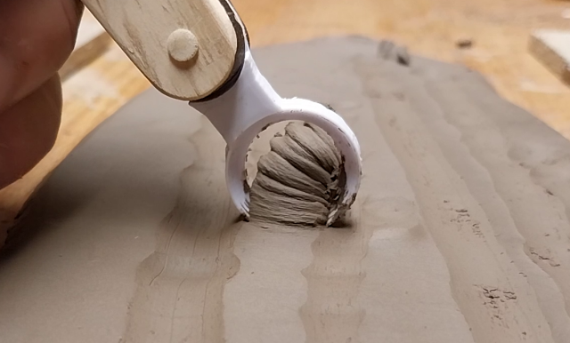

Hand Tools!
A nice collection of hand tools is essential for any pottery. So in case you don’t want to wait
days for shipping, here are some simple hand tools you can print&cut&build in less than an
hour, just add clay!
1) Print the models and cut off the brim.
2) The laser-cut handles were sanded and given a coat of linseed oil. A slit was also sawn
for the tool.
3)Some 3mm 3D printing filament was used to rivet the tool to the handle. You could also
use some 3mm weed whacker line, or any other plastic tube/rod/line rivet-thing.
4)The ends were heated with a lighter, and smooched flat with some blunt metal object
See the video for more information.
The SVG/STL files for the tools and handle
3D prints:
STL's
Laser-Cut SVG's:
SVG's
I’ve also included the blender file, in case anyone wants to make original designs.
If you do, and want to share them with the community? Shoot me an mail with the files
attached at jknudsenbuild@gmail.com, and I’ll put them up here(possibly with some curation
to avoid duplicates etc), you’ll decide how it’s attributed
Blender file